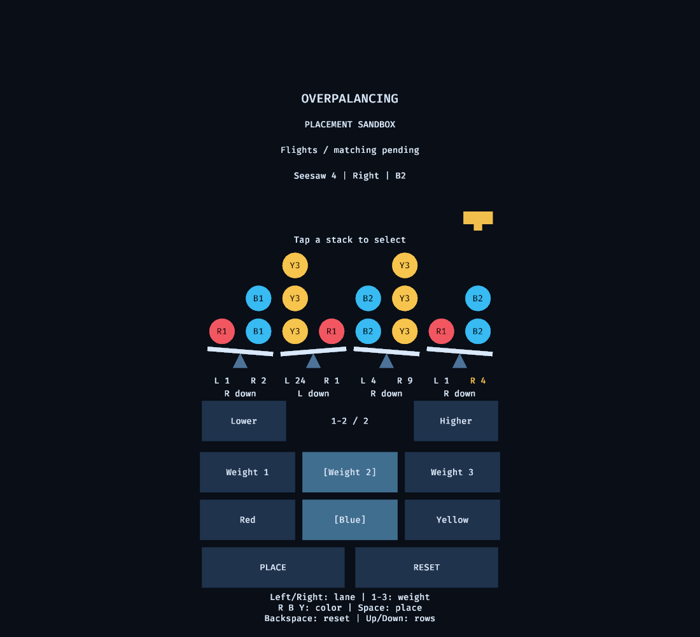
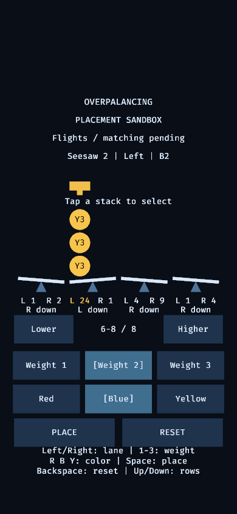

Placement sandbox
Configure a ball and place it onto either side of four seesaws. This sandbox demonstrates fixed stacks, accumulated weights and illustrative tilt. Balls remain in their ordered stacks; they do not roll or launch. Matching, compression, scoring and final dispenser sequencing are outside this feature.
Configure and place
- Select one of eight stack positions: left or right on each seesaw.
- Choose weight 1, 2 or 3 and one color: red, blue or yellow. These are sandbox presets, not final limits for the game.
- Check the selected target, weight and color, then activate Place. One ball is added to that stack. Changing the configuration leaves existing balls unchanged.
| Action | Keyboard | Mouse or touch |
|---|---|---|
| Select stack | Left/Right arrows or A/D | Click or tap the desired stack position |
| Choose weight | 1, 2 or 3 | Activate the corresponding weight button |
| Choose color | R, B or Y | Activate Red, Blue or Yellow |
| Place one ball | Space or Enter | Activate Place |
| Inspect retained stack rows | Up/Down arrows | Activate Lower or Higher |
| Clear all stacks | Backspace | Activate Reset |
Selecting a stack does not place a ball. Use the explicit Place action. Reset clears all eight stacks.
Read the board
Each side displays its total accumulated weight, including balls outside the visible stack window. The heavier side tilts downward; equal totals balance. Color names or letters accompany ball colors and weights remain numeric.
Tall stacks have no invented loss condition or arbitrary capacity limit. Lower and Higher change which retained rows are visible; inspection does not remove balls. The same row offset is shared by all stacks. The range indicator describes the selected stack; it can show Empty while another stack still has balls in those rows.
Rendered evidence


Verification status
On 2026-10-19, the UX engineer inspected filled Linux render screenshots in landscape and at 390-pixel portrait width, plus a pointer-placement screenshot after reset. All four seesaws, weight/color labels, selected side totals and controls are readable; the tall-stack view shows retained rows 6–8 with the full accumulated total. The lead verified the regenerated final portrait render: shortened balance labels are separated and readable. The lead separately reports successful X11 keyboard placement across all eight positions, tall-stack inspection, live resizing, reset and pointer configuration/placement checks. Touch has headless input-system coverage, not physical-device proof. Linux rendering does not establish Android or iOS device execution; cross-platform runtime checks and customer feature acceptance remain pending.
See acceptance scenarios, verification evidence and open decisions. Question 0007 blocks launch behavior; this sandbox does not choose that rule.